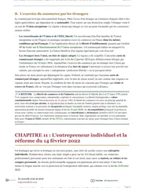

L'arrêt du 2 décembre 2020 sur l'agent commercial, expliqué simplement
Le 2 décembre 2020, la chambre commerciale de la Cour de cassation (pourvoi n° 18-20.231) juge qu'un intermédiaire indépendant peut être agent commercial même s'il ne peut pas modifier les prix fixés par son mandant, c'est-à-dire l'entreprise pour laquelle il travaille. La Cour abandonne ainsi la définition restrictive de la négociation qu'elle appliquait depuis des années, et elle suit la Cour de justice de l'Union européenne (CJUE), qui avait statué dans le même sens le 4 juin 2020.

Que dit l'arrêt du 2 décembre 2020 sur l'agent commercial ?
Selon l'arrêt du 2 décembre 2020, le statut d'agent commercial ne dépend plus du pouvoir de modifier les prix fixés par l'entreprise. Un intermédiaire chargé de façon permanente de négocier des contrats pour une entreprise garde ce statut même quand cette entreprise fixe seule tous ses tarifs.
Un agent commercial est un intermédiaire indépendant. Il cherche des clients pour une entreprise, que l'on appelle le mandant. Il agit au nom du mandant, c'est-à-dire qu'il se présente comme son représentant auprès des clients, et pour son compte, c'est-à-dire que le contrat se forme entre le client et le mandant. Sa rémunération prend le plus souvent la forme d'une commission sur les contrats conclus. De plus, les articles L134-1 et suivants du Code de commerce lui donnent un statut protecteur, qui comprend notamment une indemnité à la fin du contrat.
La question tranchée par l'arrêt porte sur la condition de négociation. L'article L134-1 réserve le statut à l'intermédiaire « chargé, de façon permanente, de négocier » les contrats. Jusqu'en 2020, la Cour de cassation exigeait que cet intermédiaire puisse influer sur le contenu du contrat, par exemple en modifiant le prix. Désormais, le prix peut rester fixé par le mandant. Pour la CJUE, dont la Cour de cassation reprend la solution, la négociation peut en effet passer par des actions d'information et de conseil et par des discussions, sans aucun pouvoir sur les prix.
Avant 2020, un intermédiaire à qui l'entreprise imposait tous ses prix se voyait refuser le statut d'agent commercial, et il perdait ainsi l'indemnité de fin de contrat. L'arrêt écarte ce refus pour les prix, et l'arrêt du 12 mai 2021 l'écarte aussi pour les autres conditions du contrat. La Cour de cassation casse, c'est-à-dire annule, l'arrêt d'appel et renvoie l'affaire devant la cour d'appel de Paris, qui doit décider si l'intermédiaire de cette affaire remplit toutes les conditions du statut.
La société Éditions Atlas confie à M. O... la prospection de ses clients sur un secteur de l'arrondissement de Sens, pour une durée indéterminée.
M. O... cesse d'exécuter la convention, puis devient trois jours plus tard le salarié d'une autre société. Il réclame ensuite le statut d'agent commercial et des indemnités.
La cour d'appel de Paris refuse de le considérer comme agent commercial et rejette ses demandes d'indemnités.
La Cour de justice de l'Union européenne juge qu'un agent commercial n'a pas à pouvoir modifier les prix des marchandises qu'il vend.
La chambre commerciale casse l'arrêt de Paris et adopte la solution européenne.

Fiche complète
Droit commercial L3
Les faits, un secteur de prospection et des prix imposés
La société Éditions Atlas est spécialisée dans l'édition et la vente de produits de loisirs. Le 20 décembre 2006, elle signe une convention avec M. O... Ce contrat lui confie donc, pour une durée indéterminée, la prospection de ses clients sur un secteur géographique de l'arrondissement de Sens. La prospection consiste en effet à aller chercher de nouveaux clients et à leur présenter les produits de la société pour obtenir leur commande.
C'est pourtant la société qui fixe tout le contenu de la vente. D'après les constatations de la cour d'appel, faites à partir des catalogues de juin à décembre 2011, chaque produit n'a qu'un seul prix, fixé par la société. Le client qui paie comptant obtient une remise de 3 % sur le prix toutes taxes comprises, avant les frais de port, et ce taux est lui aussi fixé d'avance. Pour le paiement à crédit, la société décide à l'avance du nombre et du montant des mensualités, ainsi que des agios, c'est-à-dire les intérêts du crédit, et des frais d'expédition. Enfin, le client s'abonne à un seul exemplaire d'une édition, si bien que M. O... ne peut pas non plus proposer une quantité plus grande.
Le contrat confirme ce partage des rôles. Son article 6.4 prévoit que « les conditions de prix et les formalités de paiement seront définies par le mandant », c'est-à-dire par la société. Son article 5-1 permet en outre à la société de vérifier chaque commande reçue et de se réserver le droit de l'accepter définitivement. M. O... recueille donc des bons de commande auprès des clients, mais c'est la société qui décide ensuite de les valider.
Le 1er juillet 2011, M. O... cesse d'exécuter la convention. Trois jours plus tard, le 4 juillet, il signe avec une autre société un contrat de travail à durée indéterminée d'attaché commercial exclusif. Il devient donc le salarié de cette autre société et vend désormais ses produits à elle.
Il assigne ensuite la société Éditions Atlas, c'est-à-dire qu'il la poursuit en justice. Il soutient qu'il était agent commercial au sens de l'article L134-1 du Code de commerce, et il demande la résiliation du contrat aux torts de la société, c'est-à-dire que le juge mette fin au contrat en constatant que la faute vient d'elle. Il lui reproche en effet de ne pas l'avoir mis en mesure d'exécuter normalement sa mission, alors que l'article L134-4 du même code impose ce devoir au mandant. Il réclame enfin plusieurs indemnités pour la rupture, sur le fondement des articles L134-11 et L134-12, qui organisent le préavis et l'indemnité de fin de contrat de l'agent commercial.
Tout le procès dépend donc de ce statut. Si M. O... est agent commercial, ces articles s'appliquent et la société lui doit en principe une indemnité de fin de contrat. Dans le cas contraire, il ne peut invoquer aucune de ces règles protectrices.
La procédure, un refus du statut en appel
Le jugement de première instance n'est pas publié. Le moyen annexé à l'arrêt de la Cour de cassation qualifie toutefois l'arrêt d'appel d'« infirmatif ». Cela signifie que la cour d'appel a réformé ce jugement, ce qui suppose que les premiers juges avaient accordé à M. O... au moins une partie de ses indemnités.
Le 3 mai 2018, la cour d'appel de Paris juge que M. O... n'a pas le statut d'agent commercial et rejette ses demandes d'indemnités. Elle commence par rappeler deux règles. D'abord, le statut dépend des conditions dans lesquelles l'activité est réellement exercée, quel que soit le nom que les parties ont donné à leur contrat. Ensuite, c'est à celui qui se dit agent commercial de prouver qu'il remplit ces conditions.
Elle examine alors les catalogues et le contrat. Puisque la société fixait seule les quantités, les prix et les modalités de paiement, elle en déduit que M. O... ne disposait d'aucune marge de manœuvre, même sur une partie de l'opération. Or, pour la cour d'appel, négocier suppose justement de pouvoir modifier une partie de l'offre. Elle ajoute que M. O... ne pouvait pas engager la société, car il ne signait aucun contrat ferme avec les clients et chaque commande restait soumise à l'accord de la société.
Elle conclut qu'il n'avait le pouvoir ni de négocier les contrats ni de représenter la société, ce qui exclut le statut. Par conséquent, M. O... ne peut invoquer ni l'article L134-4 ni les articles L134-11 et L134-12, et toutes ses demandes d'indemnités sont rejetées.
M. O... forme alors un pourvoi en cassation, c'est-à-dire qu'il demande à la Cour de cassation de vérifier si la cour d'appel a correctement appliqué la loi. Pendant l'examen de ce pourvoi, le 4 juin 2020, la Cour de justice de l'Union européenne rend l'arrêt Trendsetteuse sur la même question. La chambre commerciale examine ensuite l'affaire à l'audience du 13 octobre 2020, après l'avis de l'avocat général, puis rend sa décision le 2 décembre 2020.
Les arguments des parties, le pouvoir sur les prix ou la mission de vendre
M. O... présente un moyen unique, c'est-à-dire un seul argument juridique contre l'arrêt d'appel. Il part de l'article L134-1 du Code de commerce et rappelle que ce texte transpose en droit français l'article 1er, paragraphe 2, de la directive européenne du 18 décembre 1986 sur les agents commerciaux. Le mot « négocier » doit donc se comprendre au sens de cette directive. Or, selon lui, un mandataire indépendant est chargé de négocier dès qu'il a pour mission permanente de procurer des affaires à une autre personne et de promouvoir ses produits auprès des prospects et des clients. Il peut alors être agent commercial même s'il n'a le pouvoir de modifier ni les tarifs ni les conditions du contrat.
Il rattache ensuite cette définition à sa propre situation, grâce au « plan de vente » que la société remettait à chaque agent. D'après lui, ce document le chargeait de conduire toute la vente, du choix du produit jusqu'aux conditions de paiement. Il devait d'abord chercher, parmi tous les produits de la société, celui qui avait le plus de chances de plaire au client qu'il démarchait. Il devait ensuite présenter le produit que le client préférait et le convaincre de l'acheter. Il lui revenait aussi de choisir, parmi les différentes formules de vente du produit, les modalités de paiement les mieux adaptées à la situation financière du client, en obtenant de lui qu'il accepte le prix le plus élevé possible. Pour M. O..., ce travail de conseil et de persuasion constitue une négociation au sens de la directive, même si le catalogue fixait chaque prix.
Il présente son reproche comme un défaut de base légale, c'est-à-dire qu'il accuse la cour d'appel de ne pas avoir fait toutes les vérifications nécessaires pour appliquer la loi. Ses conclusions d'appel demandaient en effet aux juges de rechercher, à partir du plan de vente, s'il avait cette mission de conseil et de persuasion. Pourtant, la cour d'appel s'est arrêtée à la seule absence de marge sur les prix, les remises et les conditions de vente, sans faire cette recherche.
La société Éditions Atlas, défenderesse au pourvoi, défend l'arrêt d'appel, dont les motifs lui donnaient raison. Ses observations ne sont pas reproduites dans la décision, qui mentionne seulement qu'elle réclamait à M. O... le paiement de ses frais d'avocat. Les motifs qu'elle défend appliquent la définition stricte de la négociation que la Cour de cassation retenait depuis 2005. D'après cette définition, l'intermédiaire négocie seulement s'il peut modifier le contenu du contrat avant sa conclusion, par exemple le prix ou les conditions de vente. À l'inverse, la promotion du produit et la prospection des clients ne suffisent pas. Comme M. O... ne pouvait rien changer à l'offre et ne pouvait pas engager la société, il restait donc en dehors du statut.
Le problème de droit
Un intermédiaire indépendant, chargé de façon permanente de prospecter des clients pour un mandant, peut-il être agent commercial alors que ce mandant fixe seul les prix et les conditions de vente, et que l'intermédiaire n'a aucun pouvoir de les modifier ?
La solution de la Cour de cassation
La chambre commerciale casse et annule l'arrêt de la cour d'appel de Paris du 3 mai 2018, mais seulement sur le refus du statut d'agent commercial, sur le rejet des demandes d'indemnités, sur les dépens, c'est-à-dire les frais de procédure, et sur les frais non compris dans les dépens, comme les honoraires d'avocat, réclamés au titre de l'article 700 du code de procédure civile. Elle renvoie l'affaire devant la cour d'appel de Paris, avec d'autres juges, et condamne la société Éditions Atlas aux dépens ainsi qu'à payer 3 000 euros à M. O... au titre de cet article.
L'attendu de principe, le paragraphe où la Cour énonce la règle générale
« Vu l'article L. 134-1 du code de commerce [...] Il en résulte que doit désormais être qualifié d'agent commercial le mandataire, personne physique ou morale qui, à titre de profession indépendante, sans être lié par un contrat de louage de services, est chargé, de façon permanente, de négocier et, éventuellement, de conclure des contrats de vente, d'achat, de location ou de prestation de services au nom et pour le compte de producteurs, d'industriels, de commerçants ou d'autres agents commerciaux, quoiqu'il ne dispose pas du pouvoir de modifier les prix de ces produits ou services. [...] En statuant ainsi, en se fondant sur l'impossibilité pour M. O... de négocier les prix, la cour d'appel a violé le texte susvisé. »Cass. com., 2 décembre 2020, n° 18-20.231, publié au Bulletin
Au paragraphe 11, la Cour reproche seulement à la cour d'appel de s'être fondée sur l'impossibilité de négocier les prix. Elle laisse de côté le reste des motifs, et la cour d'appel de renvoi devra donc rechercher si M. O... remplit les autres conditions de l'article L134-1. Le pourvoi invoquait un défaut de base légale, mais la Cour retient une violation de la loi. Elle juge ainsi que la cour d'appel s'est trompée sur le sens même de l'article L134-1, et pas seulement qu'elle a oublié une vérification.
Le sens du raisonnement
La Cour commence par décrire sa propre jurisprudence. Elle reconnaît qu'elle avait retenu « une acception stricte de la notion de négociation, consacrant par là-même une approche restrictive de la qualification d'agent commercial ». En effet, pour distinguer l'agent des autres intermédiaires, qui n'ont pas droit au statut protecteur, elle exigeait que l'intermédiaire dispose « d'une marge de manoeuvre certaine pour influer sur les éléments constitutifs de la convention » avant la conclusion du contrat avec le client. Elle citait comme exemples ses arrêts du 14 juin 2005 et du 10 octobre 2018, ce qui montre que cette exigence était appliquée depuis longtemps. Un intermédiaire sans marge sur le prix restait donc en dehors du statut.
Dans cette logique, un intermédiaire qui se bornait à promouvoir le produit ou à prospecter la clientèle ne négociait pas. Prenons un représentant qui démarche des commerces pour une marque de cosmétiques. Le catalogue de la marque indique un prix unique par produit, sans remise possible. Ce représentant présente les produits, conseille les clients sur leur choix et recueille leurs commandes. Selon l'ancienne solution, il ne négociait pas puisqu'il ne pouvait rien changer à l'offre. La marque pouvait ainsi lui refuser l'indemnité de fin de contrat.
Elle s'appuie ensuite sur la décision de la CJUE. Le 4 juin 2020, la Cour de justice de l'Union européenne (CJUE) répond, dans l'affaire Trendsetteuse (C-828/18), à une question du tribunal de commerce de Paris. La société Trendsetteuse diffusait les produits de la marque IZI-MI pour la société DCA, en échange d'une commission sur les ventes. En 2016, DCA lui retire une partie de son secteur, puis refuse de lui verser des indemnités de rupture, en soutenant que Trendsetteuse n'est pas agent commercial, faute de pouvoir modifier les prix des articles qu'elle vend. Le tribunal de commerce de Paris doit juger ce litige. Il interroge donc la CJUE, c'est-à-dire qu'il lui demande comment interpréter le droit européen. On appelle cette procédure un renvoi préjudiciel.
La CJUE répond qu'une personne « ne doit pas nécessairement disposer de la faculté de modifier les prix des marchandises dont elle assure la vente pour le compte du commettant pour être qualifiée d'agent commercial ». Le mot « commettant » désigne ici le mandant. Elle appuie sa réponse sur trois arguments.
- La notion est européenne. La directive de 1986, qui est un texte européen que chaque État doit intégrer à son droit, ne renvoie à aucun droit national pour le sens du mot « négocier ». Ce mot doit donc être compris de la même façon dans toute l'Union (point 25).
- Le prix peut être fixé par le contrat. Un mandant peut avoir de bonnes raisons commerciales de fixer ses prix, comme sa position sur le marché ou les tarifs de ses concurrents (point 31). Les tâches principales de l'agent consistent à apporter de nouveaux clients et à développer les opérations avec les clients existants, et il peut les accomplir par des actions d'information et de conseil ainsi que par des discussions (points 33 et 34).
- Une lecture stricte permettrait de contourner la directive. Il suffirait au mandant de se réserver dans le contrat toute la négociation des prix pour échapper aux règles impératives de la directive, c'est-à-dire celles auxquelles un contrat ne peut pas déroger, en particulier à l'indemnité de fin de contrat (point 38).
La chambre commerciale en tire enfin une nouvelle définition. Moins de six mois après l'arrêt Trendsetteuse, elle reprend la réponse de la CJUE. Elle rappelle que l'article L134-1 transpose la directive européenne de 1986, puis elle en déduit que « doit désormais être qualifié d'agent commercial » le mandataire qui négocie de façon permanente, « quoiqu'il ne dispose pas du pouvoir de modifier les prix ».
Quand la CJUE précise le sens d'une directive, les juges nationaux doivent en effet lire la loi qui la transpose dans le même sens. La Cour de cassation respecte donc cette obligation, quitte à abandonner une définition qu'elle appliquait depuis quinze ans.
La Cour reprend aussi la solution pour d'autres contrats que la vente de marchandises. La directive vise la vente ou l'achat de marchandises, alors que l'article L134-1 couvre aussi la location et la prestation de services. La Cour écrit donc qu'un agent commercial n'a pas à pouvoir modifier « les prix de ces produits ou services ».
Les arrêts de droit commercial s'oublient vite ?
Mon guide gratuit « Réviser le droit sans s'épuiser » détaille la méthode que mes élèves utilisent pour retenir un arrêt avec sa règle et son contexte. Tu le reçois par email, en échange de ton adresse.
Qu'est devenue la solution de l'arrêt du 2 décembre 2020 ?
L'arrêt du 12 mai 2021 a repris la solution de 2020 et l'a étendue à toutes les conditions du contrat. L'arrêt du 2 décembre 2020 est d'abord un revirement de jurisprudence, c'est-à-dire un changement de solution de la Cour de cassation sur un point qu'elle jugeait autrement jusque-là. L'ancienne solution s'est construite en plusieurs arrêts. Le 14 juin 2005, la chambre commerciale admettait le statut pour une société qui bénéficiait de « larges pouvoirs de négocier » les remises et les modalités de règlement. Le 20 janvier 2015, elle cassait au contraire un arrêt qui avait reconnu le statut à un représentant dépourvu du pouvoir de négocier au nom et pour le compte de son mandant (pourvoi n° 13-24.231). Le 10 octobre 2018, sur renvoi de cette affaire, elle déclarait irrecevable, c'est-à-dire écarté sans examen, un moyen qui l'invitait à revenir sur cette solution.
Trois arrêts de 2021 précisent ensuite les limites de la nouvelle solution.
- Le 27 janvier 2021 (n° 18-10.835). La chambre commerciale rejette le pourvoi d'une société qui demandait au juge de reconnaître que son contrat, intitulé « contrat d'apporteur d'affaires », était en réalité un contrat d'agence commerciale. La cour d'appel avait constaté, d'après l'exécution du contrat, que le mandant décidait de la politique commerciale et tarifaire, et que le représentant de la société n'avait ni pouvoir de signature, ni pouvoir de négociation des conditions contractuelles. Il s'agissait donc d'un contrat de courtage, c'est-à-dire d'une simple mise en relation.
- Le 10 février 2021 (n° 19-13.604). Elle rejette aussi le pourvoi de sociétés qui mettaient une entreprise en relation avec des centrales d'achat. Ces centrales négociaient directement avec cette entreprise, et les sociétés se bornaient à lui transmettre des informations et à lui répercuter les demandes des centrales.
- Le 12 mai 2021 (n° 19-17.042, publié). Elle casse, c'est-à-dire annule, l'arrêt qui refusait le statut à une société chargée de vendre en Russie les vins d'un autre. La cour d'appel retenait que le mandant gardait la maîtrise des prix et des conditions des contrats. Ainsi, la Cour étend ici la solution de 2020 à toutes les conditions du contrat. Le mandant qui fixe seul les prix et les autres conditions des contrats n'écarte plus, pour cette seule raison, le statut d'agent commercial.
L'intermédiaire doit toujours négocier, car l'article L134-1 le charge de négocier « et, éventuellement, de conclure » les contrats. Le pouvoir de signer est donc facultatif. Les rejets de janvier et de février 2021 concernent d'ailleurs des intermédiaires qui n'avaient ni le pouvoir de négocier, ni celui de signer ou d'engager l'entreprise. Les autres conditions du texte ne changent pas non plus.
- L'agent est un mandataire, qui agit au nom et pour le compte de son mandant.
- Il exerce à titre de profession indépendante, sans être lié par un contrat de louage de services, c'est-à-dire sans être salarié.
- Il est chargé de négocier de façon permanente, ce qui exclut l'intermédiaire occasionnel.
L'intermédiaire qui obtient le statut peut réclamer l'indemnité de fin de contrat que prévoit l'article L134-12. Cette indemnité répare le préjudice de l'agent quand ses relations avec le mandant cessent. Elle disparaît toutefois si l'agent ne notifie pas au mandant, dans l'année qui suit la fin du contrat, qu'il entend faire valoir ses droits.
L'article L134-13 écarte pourtant cette indemnité dans trois cas. Le premier est la faute grave de l'agent. Le deuxième est la rupture décidée par l'agent, sauf si elle s'explique par des circonstances imputables au mandant ou par l'âge, l'infirmité ou la maladie de l'agent, au point qu'on ne puisse plus raisonnablement lui demander de continuer son activité. Le troisième est la cession du contrat à un tiers avec l'accord du mandant. Quand l'indemnité est due, les juges l'évaluent le plus souvent à deux années de commissions. Elle représente donc une somme élevée pour le mandant.
Cette indemnité s'explique par la clientèle. L'agent développe une clientèle pour le compte du mandant, qui la conserve quand le contrat prend fin. L'agent se distingue ainsi du commerçant, qui possède un fonds de commerce, c'est-à-dire l'ensemble des éléments qui servent à exploiter son commerce, dont sa clientèle, notion que j'explique dans ma fiche sur l'arrêt du 27 mars 1963 sur la clientèle. Par ailleurs, l'article L134-16 répute non écrite, c'est-à-dire considère comme inexistante, toute clause qui déroge à l'indemnité au détriment de l'agent. Le mandant ne peut donc pas s'en dispenser par une clause du contrat.
Le statut d'agent commercial s'inscrit dans le droit du mandat. Si tu veux voir comment un mandataire engage son mandant, ma fiche sur l'arrêt de 1962 sur le mandat apparent et ma page sur la représentation en droit des contrats posent les bases. Ma fiche de droit commercial L3 replace ensuite l'agent commercial parmi les autres acteurs voisins du commerçant.
La critique de cette solution
Plusieurs commentateurs relèvent la fin d'une divergence. En effet, avant l'arrêt, d'autres juridictions françaises et des juridictions d'autres États membres auraient retenu pour le mot « négocier » un sens plus large que celui de la Cour de cassation, comme le rapportait le tribunal de commerce de Paris dans sa question à la CJUE (point 17 de l'arrêt Trendsetteuse). Un cabinet d'avocats décrit d'ailleurs l'arrêt de 2020 comme attendu par la doctrine, c'est-à-dire par les universitaires qui commentent les arrêts, et par les praticiens. Un autre rappelle que la Cour de cassation avait maintenu sa conception restrictive malgré les critiques de cette doctrine.
L'argument de fond, tiré du point 38 de l'arrêt Trendsetteuse, tient à l'efficacité de la directive. Sans la nouvelle solution, une entreprise pouvait écarter l'indemnité de fin de contrat en inscrivant dans le contrat que tous les prix sont fixés par elle. L'intermédiaire perdait son statut par le seul effet de cette clause, alors que la directive vise à protéger l'agent face à son mandant.
Certains points restent pourtant discutés. D'abord, l'arrêt dit surtout ce qui n'est plus exigé, à savoir le pouvoir de modifier les prix, mais il ne décrit pas ce que l'intermédiaire doit faire pour négocier. La réponse positive vient de l'arrêt du 12 mai 2021, qui reprend les points 33 et 34 de l'arrêt Trendsetteuse. Ces points décrivent la négociation comme des actions d'information et de conseil et des discussions qui favorisent la conclusion de la vente. La frontière avec le courtier ou l'apporteur d'affaires se règle donc au cas par cas, comme le montrent les rejets de janvier et de février 2021.
Ensuite, un cabinet d'avocats met en garde les entreprises qui recourent à des apporteurs d'affaires. Leurs contrats risquent désormais davantage d'être requalifiés, c'est-à-dire reconnus par le juge comme de véritables contrats d'agence commerciale. Or l'indemnité de fin de contrat de l'agent est élevée. Les arrêts de janvier et de février 2021 rappellent toutefois que la qualification dépend de la façon dont le contrat est exécuté.
Enfin, l'arrêt ne tranche pas le sort de M. O... La cour d'appel de Paris avait relevé qu'il ne pouvait ni signer de contrat ferme avec les clients, ni engager la société. La Cour de cassation ne répond pas sur ce point, et la cour d'appel de renvoi doit encore dire s'il remplissait les conditions du statut.
Comment utiliser cet arrêt dans une copie
Dans un cas pratique. Tu cites cet arrêt dès qu'un énoncé met en scène un intermédiaire payé à la commission, dont le mandant impose les prix, et qui réclame une indemnité après la rupture du contrat. Tu vérifies d'abord que l'intermédiaire agit comme mandataire indépendant, puis qu'il est chargé de négocier de façon permanente, comme l'exige l'article L134-1.
Ensuite, tu écris que le pouvoir de modifier les prix n'est pas exigé, en citant l'arrêt du 2 décembre 2020. Puis tu cherches dans les faits ce qui montre une négociation, par exemple des conseils donnés au client sur le choix des produits ou des discussions avec lui sur sa commande. Tu termines par la conséquence, c'est-à-dire l'indemnité de l'article L134-12, que l'intermédiaire doit réclamer dans l'année qui suit la fin du contrat.
Dans une dissertation. Cet arrêt illustre l'influence du droit de l'Union sur une notion de droit interne. En 2020, l'article L134-1 garde les mêmes mots, mais l'arrêt de la CJUE lui donne un nouveau sens. Tu peux construire un plan en deux temps, d'abord la conception restrictive de la Cour de cassation jusqu'en 2020, puis l'alignement sur le droit européen et ses limites, avec les arrêts de 2021.
Tu trouves la méthode complète sur ma page sur le cas pratique et sur celle de la dissertation juridique. Ma page sur la fiche d'arrêt explique l'étape qui précède toujours le raisonnement rédigé. Tu peux aussi retrouver les autres décisions de la matière dans toutes les fiches d'arrêt.
Les erreurs à éviter avec cet arrêt
- Retenir que M. O... obtient le statut. La Cour de cassation casse l'arrêt d'appel et renvoie l'affaire. Elle juge seulement que l'impossibilité de négocier les prix ne suffit pas à écarter le statut.
- Penser qu'un intermédiaire n'a plus rien à négocier. L'article L134-1 exige toujours une mission de négociation. Les sociétés qui se bornaient à transmettre des informations et des demandes, le 10 février 2021, sont restées hors du statut.
- Confondre la CJUE et la Cour de cassation. L'arrêt Trendsetteuse du 4 juin 2020 est une décision de la Cour de justice de l'Union européenne, qui interprète la directive de 1986. En revanche, l'arrêt du 2 décembre 2020 est celui de la Cour de cassation, qui applique cette interprétation en droit français. Dans une copie, tu cites l'arrêt de la Cour de cassation, puis celui de la CJUE sur lequel il s'appuie.
- Se fier au titre du contrat. Le juge regarde comment le contrat est exécuté. Le 27 janvier 2021, un « contrat d'apporteur d'affaires » est analysé d'après son exécution et il est qualifié de courtage.
- Oublier les services. La directive de 1986 parle de marchandises, mais l'article L134-1 couvre aussi la location et la prestation de services. L'arrêt de la Cour de cassation vise « ces produits ou services ».
Questions fréquentes
Que dit l'arrêt du 2 décembre 2020 en une phrase ?
Quelle est la date et le numéro de pourvoi de cet arrêt ?
Quelle différence entre l'arrêt Trendsetteuse et l'arrêt de la Cour de cassation ?
Cet arrêt est-il toujours d'actualité ?
Comment citer cet arrêt en copie ?

Le droit commercial de L3 compte beaucoup d'autres arrêts à réviser.
Ma page de droit commercial L3 regroupe les grands arrêts de la matière et renvoie vers la fiche de chacun. Tu y retrouves la règle posée par l'arrêt, puis la façon de la réutiliser en commentaire ou en cas pratique.
Voir la fiche de droit commercial L3